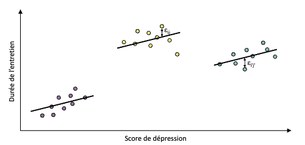

set.seed(1)
# génération des Xi et Yi pour 5 temps de mesure dans 200 centres
x1 <- runif(200)*0.3 # Génération des xi pour le centre j
x2 <- runif(200)*0.3
x3 <- runif(200)*0.3
x4 <- runif(200)*0.3
x5 <- runif(200)*0.3
a <- rnorm(200)*100+300 # Les coefficiens de la régression
b <- rnorm(200)*100+150 # sont fonction du centre
y1 <- a+b*x1+rnorm(200)*72.5
y2 <- a+b*x2+rnorm(200)*72.5
y3 <- a+b*x3+rnorm(200)*72.5
y4 <- a+b*x4+rnorm(200)*72.5
y5 <- a+b*x5+rnorm(200)*72.5
# dt est le fichier "large" (une ligne par centre)
dt <- data.frame(1:200,x1,y1,x2,y2,x3,y3,x4,y4,x5,y5)
names(dt)[1] <- "centre"
# conversion du fichier "large" en fichier "long"
dtl <- reshape(dt,idvar="centre",varying=2:11,v.names=c("x","y"),timevar = "temps",direction="long")
dtl$centre <- as.factor(dtl$centre)3 6 Effet centre
4 Introduction
Les mesures répétées désignent des situations où plusieurs observations sont recueillies sur une même unité statistique (souvent un patient) au cours du temps, ou lorsque les observations sont regroupées au sein de clusters (par exemple, des patients au sein d’un même hôpital ou des membres d’une même famille).
Le défi majeur posé par ces données réside dans la non-indépendance des observations.
En effet, les mesures effectuées sur un même patient à différents moments sont généralement corrélées entre elles.
Ignorer cette corrélation en utilisant des méthodes statistiques classiques (comme la régression linéaire standard ou l’ANOVA classique) viole l’hypothèse d’indépendance des résidus, conduisant à des estimations biaisées de la précision (intervalles de confiance trop étroits) et à une augmentation du risque d’erreur de type I.
Si l’analyse est relativement simple avec seulement deux points de mesure (analyse de l’évolution \(Y_{après} - Y_{avant}\) ou ajustement sur la valeur basale), elle devient plus complexe avec trois mesures ou plus.
5 Modèle linéaire
Imaginons qu’on corrèle la durée d’entretien (en minutes) \(Y\) avec le niveau de dépression \(X\).
\(Y\) est supposé normalement distribué.
\(X\) est supposé quantitatif.
Corrélation : peut être intra- ou inter-centre
Intra-centre : rechercher si un sujet avec un niveau de dépression \(X\) élevé a une durée d’entretien \(Y\) supérieure à celle d’un autre sujet du même centre présentant un niveau de dépression plus bas.
Inter-centre : la durée moyenne des entretiens \(\hat{Y}\) réalisés dans les prisons avec un haut niveau de dépression est-elle supérieure ou inférieure à la durée moyenne des entretiens réalisés dans les autres prisons ?
5.1 Analyse naïve sans prise en compte du centre
Imaginons qu’on néglige l’effet centre et qu’on réalise une régression linéaire simple de \(Y\) en fonction de \(X\)..
On prend 3 centres comprenanant chacun 9 détenus.

Ici :
Effet centre particulièrement important
Chaque centre semble associé à un niveau spécifique de dépression \(\hat{X}\)
Et à un niveau moyen spécifique de durée d’entretien \(\hat{Y}\)
5.1.1 Problèmes posés par cette analyse naïve
= biais de confusion par effet de groupe + non-indépendance des résidus
Problème 1 : Biais de confusion par effet de groupe.
Si les centres pour lesquels le niveau de dépression est le plus élevé sont aussi ceux où la durée moyenne des entretiens est la plus longue, la pente de régression est biaisée.
Elle mélange l’effet individuel (la relation durée-dépression pour un détenu) et l’effet du groupe. Le modèle ne peut distinguer si la dépression est liée à la durée de l’entretien ou à d’autres facteurs propres au centre (personnel, type de population, etc.).
Conséquence : Le coefficient de régression estimé est faussé et ne représente pas la véritable association au niveau individuel.
Problème 2 : Non-indépendance des résidus.
Les résidus \(\varepsilon_i\) ne sont pas indépendants. Les observations au sein d’un même groupe (centre) se ressemblent plus qu’avec celles d’autres groupes.
C’est la corrélation intra-classe.
Conséquence : Ce problème ne biaise pas l’estimation de la pente, mais il conduit à une sous-estimation de son erreur-standard.
Impact : L’intervalle de confiance est artificiellement étroit et la p-value trop petite. Le risque est de conclure à tort à un effet significatif (Erreur de Type I).
Solutions : Bootstrap par grappe ou estimateur sandwich
Le Bootstrap par grappe (Cluster Bootstrap) :
Principe :
Puisque les individus d’un groupe ne sont pas indépendants, on ré-échantillonne les groupes (les centres) avec remise.
Pour chaque groupe tiré, on inclut tous les individus qu’il contient.
Résultat :
On obtient une distribution de 1000 coefficients qui reflète l’incertitude liée à la variabilité entre les groupes. L’IC à 95% est construit à partir de cette distribution (ex: via les percentiles).
Cet intervalle sera presque toujours plus large que l’IC naïf, reflétant une estimation plus honnête de l’incertitude.
L’estimateur “Sandwich” (Estimateur Robuste de la Variance) :
Le problème :
Le modèle classique est “trop confiant”. Il pense que chaque ligne de données apporte une information unique.
Or, si les patients d’un même centre se ressemblent, on a moins d’information réelle qu’on ne le croit.
L’erreur-standard calculée classiquement est donc trop petite.
Solution :
Au lieu de se fier uniquement à la théorie (qui suppose l’indépendance), l’estimateur Sandwich regarde les résidus réels (les erreurs du modèle).
Si, dans un centre, tous les résidus vont dans le même sens (ex: le modèle se trompe toujours par excès pour ce centre), l’estimateur détecte cette corrélation. Il utilise cette “réalité du terrain” pour corriger mathématiquement la variance à la hausse.
Principe : La formule mathématique de la variance robuste se compose de trois blocs multipliés entre eux : \(A \times B \times A\).
On l’appelle “Sandwich” uniquement parce que la correction (B) est coincée entre deux blocs identiques (A), comme une tranche de jambon entre deux tranches de pain.
Le bloc A (La Théorie) : C’est la variance calculée par le modèle classique. Elle suppose que tout est parfait (indépendance).
Le bloc B (La Réalité) : C’est une correction calculée directement à partir des données brutes (les résidus). Si les erreurs sont corrélées dans les groupes, ce bloc B va “gonfler” la valeur.
Le calcul : On multiplie
Théorie\(\times\)Correction\(\times\)Théorie.
Résultat : Les estimations des coefficients (la pente) ne changent pas, mais les intervalles de confiance s’élargissent et les p-values augmentent, reflétant une incertitude plus honnête.
5.1.2 Exemple R avec jeu de données fictif
- Génération des données
- Régression linéaire simple sans prise en compte de l’effet centre
mod.lm <- lm(y ~ x, data=dtl)
summary(mod.lm)$coefficients Estimate Std. Error t value Pr(>|t|)
(Intercept) 286.6649 8.232679 34.820363 1.591602e-174
x 153.6712 47.571204 3.230341 1.276828e-03Ici, le calcul de l’erreur-standard (l’écart-type) et de la p-value repose sur l’hypothèse que les résidus sont indépendants, ce qui n’est pas le cas.
Impossible de le savoir si on n’a pas d’information sur les données !!
Attention parce que les résidus semblent “normaux” (cf. graphique ci-dessous), cela ne garantit pas leur indépendance.
par(mfrow=c(1,2))
hist(residuals(mod.lm),main="Histogramme des résidus",xlab="Résidus")
qqnorm(residuals(mod.lm),main="Q-Q plot des résidus")
qqline(residuals(mod.lm))
Bootsrap
Il est possible de recourir à un bootstrap pour contourner cette limite, en utilisant la fonction clusbootglm() de la bibliothèque ClusterBootstrap.
set.seed(1)
library("ClusterBootstrap")
mod.clusboot <- clusbootglm(y~x,data=dtl,clusterid=centre)$boot.coefs :
(Intercept) x
286.6787 153.6561
$boot.sds
(Intercept) x
11.03841 50.14656L’écart type de b = 50,14 (par rapport à 47,57 naïf). Les coefficients ne changent pas.
Estimateur sandwich
library("sandwich")
sqrt(diag(vcovCL(lm(y~x,data=dtl),cluster=~centre))["x"]) x
50.73999 L’estimation de l’erreur type (50.74) est très proche de celle du bootstrap, prenant toujours en compte la dépendance des observations d’un même centre.
5.2 Analyse avec prise en compte de l’effet centre
il s’agit ici de calculer les moyennes de X et Y pour chaque centre puis d’en faire une régression linéaire

5.2.1 Exemple R
#moyenne de Y et X par centre
ymeans = tapply(dtl$y, dtl$centre, mean)
xmeans = tapply(dtl$x, dtl$centre, mean)
#régression linéaire des moyennes
summary(lm(ymeans ~ xmeans))
Call:
lm(formula = ymeans ~ xmeans)
Residuals:
Min 1Q Median 3Q Max
-309.22 -75.94 -4.72 73.62 308.89
Coefficients:
Estimate Std. Error t value Pr(>|t|)
(Intercept) 268.8 29.6 9.080 <2e-16 ***
xmeans 272.9 190.4 1.434 0.153
---
Signif. codes: 0 '***' 0.001 '**' 0.01 '*' 0.05 '.' 0.1 ' ' 1
Residual standard error: 111.4 on 198 degrees of freedom
Multiple R-squared: 0.01027, Adjusted R-squared: 0.005276
F-statistic: 2.055 on 1 and 198 DF, p-value: 0.1532xmeans : fournit une estimation de la pente inter-centres.
Fournit une estimation de la pente inter-centres, avec une erreur type estimée en prenant en compte l’indépendance des centres.
Cela indique comment la moyenne de \(Y\) varie d’un centre à l’autre en fonction de la moyenne de \(X\) du centre. L’erreur type est ici estimée correctement car on travaille sur les centres (qui sont indépendants entre eux), et non sur les observations répétées.
5.3 Analyse intra-centres (modèles conditionnels, mixtes ou non)
3 méthodes :
Modèle linéaire avec effet fixe par centre (chaque centre )
Modèle linéaire avec pente commune (intercept variable par centre)
Modèle mixte avec effet aléatoire de centre (c’est à dire que les centres sont vus comme un échantillon aléatoire d’une population plus large de centres possibles)
5.3.1 Modèle linéaire avec effet fixe par centre
Pour évaluer la corrélation intra-centre entre \(X\) et \(Y\), on peut faire une régression linéaire dans chaque centre puis calculer la moyenne des pentes obtenues.

C’est une approche “conditionnelle” car chaque pente est calculée “conditionnellement” à un centre donné.
L’équation serait :
\[ Y_{ij} = a + [a.centre_{j}] + b x_{ij} + [b.centre_{j}] x_{ij} + \varepsilon_{ij} \]
\(i\) : individu
\(j\) : centre
\(a\) : intercept global
\(b\) : pente globale
\([a.centre_{j}]\) : déviation de l’intercept pour le centre j
\([b.centre_{j}]\) : déviation de la pente pour le centre j
Globalement : ça revient à faire une régression linéaire avec des interactions entre \(X\) et le centre.
Donc chaque centre a sa propre droite de régression (intercept et pente différents).
En R simplement : lm(y ~ x * centre).
5.3.2 Modèle linéaire avec pente commune (intercept variable par centre)
Variante plus simple : pente commune
Modèle proposé :
\[ y_{ij} = a + [a.\text{centre}_j] + b\, x_{ij} + \varepsilon_{ij} \]
Ici :
chaque centre \(j\) a son intercept propre : \(a + [a.\text{centre}_j]\)
mais la pente \(b\) est identique dans tous les centres
Graphiquement : toutes les droites sont parallèles (même pente) mais décalées verticalement (intercepts différents).

En R : lm(y \~ x + centre)
Avec 2 trucs importants à savoir sur l’interprétation de b :
\(b\) : sorte de moyenne des pentes centre par centre, pondérée par la variance de \(x\) dans chaque centre.
- Donc lié aux pentes que l’on obtiendrait si on faisait une régression séparée dans chaque centre, puis qu’on faisait une moyenne pondérée.
erreur type de \(b\) : correcte uniquement si vraiment toutes les pentes sont égales entre centres.
Si en réalité les pentes diffèrent un peu entre centres, mais que le modèle force une pente commune, alors :
\(b\) reste un estimateur moyen
mais l’incertitude autour de \(b\) est mal évaluée → d’où la suggestion d’utiliser un estimateur sandwich (variance robuste) ou le bootstrap.
Résumé :
Modèle plus simple, mais repose sur l’hypothèse forte : “même pente partout”.
Si cette hypothèse est fausse, le \(b\) affiché reste “une pente moyenne”, mais son écart-type est trop optimiste.
5.3.3 Modèle mixte avec effet aléatoire de centre
Utile surtout si beaucoup de centres.
Passage aux modèles “mixtes” : centre comme effet aléatoire
Idée : plutôt que mettre une variable catégorielle [centre] avec 10 000 modalités, on introduit une variable aléatoire (centre).
Donc la variable catégorielle [centre] devient une variable aléatoire gaussienne (centre).
Nouveau modèle :
\[ y\_{ij} = a + (a\_{\text{centre}*j}) + b, x*{ij} + \varepsilon\_{ij} \]
Ou :
\((a\_{\text{centre}*j})\) : effet aléatoire pour le centre j, c’est à dire une variable aléatoire qui suit une distribution normale et qui modélise la variabilité des intercepts entre centres.
\(b\) : pente commune à tous les centres.
\(\varepsilon\_{ij}\) : erreur résiduelle pour l’individu i dans le centre j.
Les effets sont “mixtes” car il y a à la fois des effets fixes (a, b) et des effets aléatoires (a_{*j}).
Ca aide car :
Pas besoin de 9999 variables binaire (dummy) pour les centres.
Processus aléatoire pour les centres.
Il faut le faire surtout s’il y a plus de 5 centres.
5.3.4 Exemple R
Calcul des pentes de régressions de \(Y\) en fonction de \(X\) dans chaque centre
# fonction calculant la pente pour un centre donné
pente_intra=function(centre) {coef(lm(data=dtl[dtl$centre==centre,], y~x))["x"]}
# application de la fonction à tous les centres
pentes = sapply(levels(dtl$centre), pente_intra)
# affichage de la pente moyenne et de son erreur standard
cat("La pente moyenne est de", round(mean(pentes), 2),
"avec une erreur standard de", round(sd(pentes) / sqrt(length(pentes)), 2), "\n")La pente moyenne est de 131.66 avec une erreur standard de 41.6 - Modèle avec effet fixe par centre \(Y_{ij} = a + [a.centre_{j}] + b x_{ij} + [b.centre_{j}] x_{ij} + \varepsilon_{ij}\)
C’est surtout le paramètre \(b\) qui nous intéresse.
On utilise contr.sum pour que le coefficient x corresponde à la pente MOYENNE de tous les centres (sinon ce serait la pente du centre de référence). Le “point zéro” n’est plus le centre 1 mais la moyenne des centres.
dtlbis <- dtl
contrasts(dtlbis$centre) <- contr.sum
# estimation du modèle avec effet fixe par centre
mod.lmci <- lm(y~x*centre, data=dtlbis)
# affichage dans un cat()
cat("La pente intra-centres estimée est de", round(summary(mod.lmci)$coefficients["x","Estimate"],2),
"avec une erreur standard de", round(summary(mod.lmci)$coefficients["x","Std. Error"],2), "\n")La pente intra-centres estimée est de 131.66 avec une erreur standard de 39.47 - Modèle avec pente commune \(Y_{ij} = a + [a.\text{centre}_j] + b\, x_{ij} + \varepsilon_{ij}\)
mod.lmc <- lm(y~x+centre, data=dtl)
cat("La pente intra-centres estimée est de", round(summary(mod.lmc)$coefficients["x","Estimate"],2),
"avec une erreur standard de", round(summary(mod.lmc)$coefficients["x","Std. Error"],2), "\n")La pente intra-centres estimée est de 118.26 avec une erreur standard de 31.51 - Modèle mixte avec effet aléatoire de centre \(Y_{ij} = a + (a_{\text{centre}*j}) + b, x*{ij} + \varepsilon_{ij}\)
Il faut utiliser la fonction lmer() de la bibliothèque lme4 ou nlme.
Syntaxe : (1|centre) signifie qu’on modélise un intercept aléatoire par centre.
library(nlme)
mod.lmer1 <- lmer(y~x+(1|centre), data=dtl)
summary(mod.lmer1)Linear mixed model fit by REML. t-tests use Satterthwaite's method [
lmerModLmerTest]
Formula: y ~ x + (1 | centre)
Data: dtl
REML criterion at convergence: 11949.7
Scaled residuals:
Min 1Q Median 3Q Max
-3.1811 -0.6001 0.0126 0.6147 2.7906
Random effects:
Groups Name Variance Std.Dev.
centre (Intercept) 11242 106.03
Residual 5723 75.65
Number of obs: 1000, groups: centre, 200
Fixed effects:
Estimate Std. Error df t value Pr(>|t|)
(Intercept) 291.354 9.146 346.352 31.857 < 2e-16 ***
x 122.391 31.081 840.929 3.938 8.91e-05 ***
---
Signif. codes: 0 '***' 0.001 '**' 0.01 '*' 0.05 '.' 0.1 ' ' 1
Correlation of Fixed Effects:
(Intr)
x -0.509La méthode ici utilisée est la vraisemblance restreinte (REML), dont le principe est d’estimer les paramètres de variance en maximisant la vraisemblance des résidus (c’est à dire leur cohérence avec les données observées), ce qui est préférable pour estimer les paramètres de variance des effets aléatoires.
L’effet centre et le résidus sont donc caractérisés par des variances estimées (du fait qu’on les considère comme des variables aléatoires).
La variance de l’effet centre est donc estimée sensiblement plus importante que le bruit présent dans le modèle (résidus).
L’estimation de la pente vaut 122,39, légèrement différente des modèles précédents.
Pour interpréter la pente d’un modèle à effets mixtes :
Si la variance intra-centre de \(X\) est très faible, la pente fixe du modèle mixte s’interprète comme une pente inter-centre.
Si la variance inter-centre de \(X\) est faible (donc faible effet centre), la pente fixe s’interprète comme une pente intra-centre.
- Modèle mixte avec pente aléatoire par centre \(Y_{ij} = a + (a_{\text{centre}*j}) + (b_{\text{centre}*j}) x_{ij} + \varepsilon_{ij}\)
5.3.5 Conditions de validités des modèles mixtes
La pente inter-centres est égale à la moyenne des pentes intra-centres (c’est à dire que les pentes des centres ne diffèrent pas trop entre elles) ;
L’indépendance des résidus, ce qui peut poser des problèmes lorsque la structurede corrélation intra-centre est complexe, notamment lorsqu’elle est susceptible d’être négative, car les modèles mixtes classiques ne permettent pas de modéliser des corrélations négatives entre les observations d’un même centre ;
Contribution des plus gros centres supérieure à celle des petits centres. Ca pose problème uniquement si la taille du centre est corrélée à la variable \(Y\).
Indépendance, normalité, homoscédasticité et nullité moyenne des effets aléatoires ; qu’il s’agisse des ordonnées à l’origine spécifiques à chacun des centres ou de leurs pentes ;
5.4 Modèle marginal = GEE (Generalized Estimating Equations)
\(Y\) : score de dépression, \(X\) durée de l’entretien, patients regroupés par centre et il existe une corrélation intra-centre.
Approche conditionnelle (modèles mixtes, etc.) : “Quel est l’effet de X dans un centre donné ?”
Approche marginale : “Quel est l’effet de X en moyenne dans la population, tous centres confondus ?”
\(\rightarrow\) on ne modélise pas les centres un par un ; on s’intéresse à la moyenne globale et on corrige seulement la corrélation.
5.4.1 Définition
Dans l’approche conditionnelle : on réalise une série de modèles au sein même de chaque centre (on regarde ce qui se passe “à l’intérieur” des centres).
Dans l’approche marginale : on écrit un modèle très simple : en gros, comme lm(y~x), mais on remplace l’estimateur classique par un autre estimateur, qui corrige pour la corrélation intra-centre.
Il faut faire l’hypothèse d’égalité des pentes inter-centres et intra-centre : la pente de la relation \(X\) - \(Y\) est la même entre les centres (si on compare des centres entre eux) et à l’intérieur des centres (si on regarde les patients d’un même centre).
Sous cette hypothèse, l’estimation GEE de la pente est plus efficace (variance plus faible) que l’estimation naïve de lm(y ~ x), c’est à dire même moyenne mais moins de variance.
5.4.2 Principe des GEE
D’abord estimation d’à quel point les observations d’un même centre sont corrélées entre elles (corrélation intra-centre).
Ensuite, GEE utilise cette information pour ajuster la manière de calculer les coefficients du modèle linéaire
Si la corrélation intra-centre est faible, GEE donne des résultats très proches de lm(y ~ x).
Si la corrélation intra-centre est forte, GEE fournit une estimation plus précise de la pente, mais l’interprétation de cette pente devient plus complexe.

Simulations de jeux de données multicentriques de taille modeste (4 observations par centre dans 5 centres).
Les panneaux A, B et C correspondent à des jeux légèrement différents.
Dans les encadrés sont données :
N°1 : les pentes fixes d’un modèle à effets mixtes à intercept aléatoire \(y_{ij} = a + [a.centre_j] + b x_{ij} + \varepsilon_{ij}\);
N°2 : les pentes d’un modèle à effets mixtes à intercept et pente aléatoires (\(y_{ij} = a + [a.centre_j] + b x_{ij} + [b.centre_j] x_{ij} + \varepsilon_{ij}\)).
Les pentes d’un modèle linéaire estimé par GEE sont également estimées.
Le symbole en gras représente la moyenne de chaque centre (barycentre des points du centre).
Une modification minime des données conduit les modèles à effets mixtes à estimer tantôt la pente inter-centres (décroissante donc négative), et tantôt la pente intra-centre (positive)
##is# Exemple R
Il faut utiliser la library gee.
Dans la syntaxe, l’utilisation de order est indispensable pour que les observations soient regroupées par centre.
L’option corstr="exchangeable" indique que la corrélation intra-centre est supposée identique entre toutes les paires d’observations d’un même centre (structure de corrélation dite “échangeable”), c’est à dire que la corrélation entre les observations 1 et 2 d’un centre est la même que celle entre les observations 1 et 3, etc.
dtlgee <- dtl[order(dtl$centre,dtl$temps),]
mod.gee <- gee(
y~x,
data=dtlgee,
id=centre,
corstr="exchangeable"
)Beginning Cgee S-function, @(#) geeformula.q 4.13 98/01/27running glm to get initial regression estimate(Intercept) x
286.6649 153.6712 summary(mod.gee)
GEE: GENERALIZED LINEAR MODELS FOR DEPENDENT DATA
gee S-function, version 4.13 modified 98/01/27 (1998)
Model:
Link: Identity
Variance to Mean Relation: Gaussian
Correlation Structure: Exchangeable
Call:
gee(formula = y ~ x, id = centre, data = dtlgee, corstr = "exchangeable")
Summary of Residuals:
Min 1Q Median 3Q Max
-391.96041 -86.83861 2.71576 83.68505 368.27139
Coefficients:
Estimate Naive S.E. Naive z Robust S.E. Robust z
(Intercept) 291.3500 9.135526 31.891982 9.410923 30.958709
x 122.4175 31.121353 3.933554 34.743959 3.523419
Estimated Scale Parameter: 16929.16
Number of Iterations: 2
Working Correlation
[,1] [,2] [,3] [,4] [,5]
[1,] 1.0000000 0.6610401 0.6610401 0.6610401 0.6610401
[2,] 0.6610401 1.0000000 0.6610401 0.6610401 0.6610401
[3,] 0.6610401 0.6610401 1.0000000 0.6610401 0.6610401
[4,] 0.6610401 0.6610401 0.6610401 1.0000000 0.6610401
[5,] 0.6610401 0.6610401 0.6610401 0.6610401 1.00000006 Modèle linéaire généralisé
6.1 Principes généraux
Si \(Y\) n’est plus une variable quantitative normalement distribuée, mais une variable binaire (ex: succès/échec), on peut utiliser un modèle linéaire généralisé (GLM) avec une fonction de lien logit (régression logistique).
NB : condition de validité de l’estimateur du maximum de vraisemblance de la régression logistique = au moins 5 à 10 évènements par variable explicative incluse dans le modèle.
On peut faire une “régression logistique conditionnelle” :
vraisemblance partielle au sein de chaque centre puis agréger ces vraisemblances en une seule valeur
- permet d’obtenir des OR intra-centres, mais empêche l’étude de l’effet centre lui-même.
“modèle linéaire généralisé à effets mixtes = GLMM” (Generalized Linear Mixed Model) :
- la variable (centre) est vue comme un effet aléatoire.
On peut aussi faire une approche “marginale” :
Ignorer l’effet centre en premier lieu (modèle logistique simple), avec si possible un bootstrap par grappe ou un estimateur sandwich pour corriger l’erreur standard pour prendre en compte la corrélation intra-centre.
Utiliser un modèle GEE avec une fonction de lien logit pour obtenir des OR “marginales” corrigées de la corrélation intra-centre.
6.2 Exemple R avec données simulées
On reprend le jeu de données simulées mais transforme \(Y\) en variable binaire selon un seuil de 300.
dtl$y.b <- ifelse(dtl$y>300,1,0)
dtlbis$y.b <- ifelse(dtlbis$y>300,1,0)
dtlgee$y.b <- ifelse(dtlgee$y>300,1,0) - Modèle non ajusté : régression logistique simple sans prise en compte de l’effet centre
modglm <- glm(y.b~x,data=dtl,family="binomial")
library(gtsummary)
# tableau gt summary avec modify footnote pour dire comment les OR ont été obtenus (en anglais)
tbl_glm <- tbl_regression(
modglm,
exponentiate = TRUE,
label = list(x ~ "Duration of interview (X)")
) %>%
modify_footnote(
estimate ~ "Odds Ratios (OR) calculated from logistic regression model without accounting for center effect."
)
tbl_glm| Characteristic | OR1 | 95% CI | p-value |
|---|---|---|---|
| Duration of interview (X) | 4.33 | 1.03, 18.4 | 0.047 |
| 1 Odds Ratios (OR) calculated from logistic regression model without accounting for center effect. | |||
| Abbreviations: CI = Confidence Interval, OR = Odds Ratio | |||
OR calculé caractérise la relation entre \(X\) et \(Y\) en ignorant l’effet centre et en supposant que toutes les observations sont indépendantes.
- Estimation par bootstrap par grappe
Pour corriger l’erreur standard résultant de la corrélation intra-centre, on peut utiliser un bootstrap par grappe ou un estimateur sandwich.
# Bootstrap par grappe
modboot <- clusbootglm(
y.b~x,
data=dtl,
clusterid=centre,
family="binomial")
modboot$boot.coefs(Intercept) x
-0.07882868 1.47121016 modboot$boot.sds(Intercept) x
0.1518630 0.7952629 exp(modboot$boot.coefs)[2] x
4.354502 L’OR estimé après bootstrap est légèrement différent, et l’erreur standard est plus grande, reflétant l’incertitude accrue due à la corrélation intra-centre.
Le rapport entre le coefficient non exponentié et l’erreur standard permet de tester la présence d’une corrélation :
cat("Le rapport coefficient/erreur standard est de",
round((modboot$boot.coefs[2]) / (modboot$boot.sds[2]), 2),
"\n")Le rapport coefficient/erreur standard est de 1.85 Le rapport entre le coefficient (non exponentié) et son erreur standard correspond au z-score du test de Wald.
Il sert à tester l’hypothèse nulle H0 : le coefficient de X est nul (OR = 1), c’est-à-dire « pas d’association entre X et Y » après correction de la corrélation intra-centre.
Si ce z-score est inférieur en valeur absolue à 1,96, on ne met pas en évidence d’association significative au seuil de 5 %.
Ici, le coefficient vaut 1,87 donc < 1,96 → pas de preuve d’une association significative entre \(X\) et \(Y\) après correction de la corrélation intra-centre.
- Modèle ajusté à effet fixe : régression logistique avec ajustement sur la variable catégorielle [centre]
modglmaj <- glm(y.b~x+centre,data=dtl,family="binomial")
summary(modglmaj)$coefficients["x", ] Estimate Std. Error z value Pr(>|z|)
2.19692245 1.24982624 1.75778230 0.07878456 exp(summary(modglmaj)$coefficients["x", "Estimate"])[1] 8.997281Le problème est que le modèle compte 199 variables indicatrices (dummy) pour les centres, ce qui est lourd.
Il faudrait au mieux 2000 observations pour respecter la règle des 10 évènements par variable, or il y en a 535.
- Modèle logistique conditionnel :
La fonction clogit() permet de faire une régression logistique conditionnelle en utilisant la vraisemblance partielle.
Vraisemblance partielle = méthode d’estimation qui permet d’éliminer les paramètres de nuisance (ici, les intercepts spécifiques à chaque centre) en conditionnant sur le nombre d’événements observés dans chaque groupe.
Au lieu d’estimer la probabilité absolue de l’événement, on estime la probabilité qu’un individu ait l’événement sachant le nombre total d’événements observés dans son centre.
Cela permet d’estimer l’association intra-centre sans avoir à estimer les coefficients de chaque centre.
C’est mathématiquement équivalent à un modèle de Cox stratifié.
library(survival)
summary(clogit(y.b~x+strata(centre),dtl))Call:
coxph(formula = Surv(rep(1, 1000L), y.b) ~ x + strata(centre),
data = dtl, method = "exact")
n= 1000, number of events= 535
coef exp(coef) se(coef) z Pr(>|z|)
x 1.754 5.779 1.115 1.573 0.116
exp(coef) exp(-coef) lower .95 upper .95
x 5.779 0.173 0.6494 51.43
Concordance= 0.551 (se = 0.037 )
Likelihood ratio test= 2.48 on 1 df, p=0.1
Wald test = 2.47 on 1 df, p=0.1
Score (logrank) test = 2.49 on 1 df, p=0.1Le coefficient obtenu correspond au Log-Odds Ratio intra-centre.
- Modèle mixte à pente commune
Ici, la pente commune correspond à une pente commune au sein des différents centres.
moglmer1 <- glmer(y.b~x+(1|centre),data=dtl,family="binomial")
summary(moglmer1)$coefficients["x", ] Estimate Std. Error z value Pr(>|z|)
1.92515054 1.01661177 1.89369294 0.05826578 exp(summary(moglmer1)$coefficients["x", "Estimate"])[1] 6.856181- Modèle mixte autorisant des pentes propres à chaque centre
modglmer2 <- glmer(y.b~x+(1+x|centre),data=dtl,family="binomial")boundary (singular) fit: see help('isSingular')summary(modglmer2)$coefficients["x", ] Estimate Std. Error z value Pr(>|z|)
2.3676541 1.0784455 2.1954323 0.0281326 exp(summary(modglmer2)$coefficients["x", "Estimate"])[1] 10.67233boundary (singular) fit: see help('isSingular') nous alerte sur un possible problème numérique : cela signifie que le modèle a du mal à estimer certains paramètres en raison d’une matrice de variance-covariance singulière, souvent causée par un manque de variabilité dans les données ou une sur-paramétrisation du modèle.
- Modèle marginal GEE avec fonction de lien logit
modgee <- gee(
y.b~x,
data=dtlgee,
id=centre,
corstr="exchangeable",
family="binomial"
)Beginning Cgee S-function, @(#) geeformula.q 4.13 98/01/27running glm to get initial regression estimate(Intercept) x
-0.07879536 1.46485165 summary(modgee)$coefficients["x", ] Estimate Naive S.E. Naive z Robust S.E. Robust z
1.1122609 0.6119977 1.8174265 0.6426709 1.7306851 exp(summary(modgee)$coefficients["x", "Estimate"])[1] 3.041227Au final, on a 7 OR différents avec des IC et des pvalue différentes :
| OR selon la methode d'estimation | |||
| Estimation Method | Odds Ratio (OR) | Standard Error | p-value |
|---|---|---|---|
| Non ajuste (GLM) | 4.33 | 0.74 | 0.0466 |
| Bootstrap ajuste (clusbootglm) | 4.35 | 0.80 | 0.0643 |
| Effet fixe ajuste (GLM + centre) | 9.00 | 1.25 | 0.0788 |
| Conditionnel (clogit) | 5.78 | 1.12 | 0.1157 |
| Pente commune mixte (glmer) | 6.86 | 1.02 | 0.0583 |
| Pente aleatoire mixte (glmer) | 10.67 | 1.08 | 0.0281 |
| Marginal (GEE) | 3.04 | 0.64 | 0.0835 |
Quel modèle choisir en pratique ?
Le choix du modèle dépend avant tout de la question scientifique et de la manière dont l’échantillon de centres est considéré.
- Objectif : mesurer une association globale dans la population (OR marginal)
Si l’échantillon a vocation à représenter une population cible, et que la question est :
« Quelle est la force de l’association entre Y.b et X globalement, dans cette population, en tenant compte du fait que les sujets sont regroupés par centre ? »,
alors l’approche logistique simple avec correction de l’erreur standard par bootstrap de grappes est souvent la plus naturelle.
Concrètement, on ajuste un modèle logistique standard glm(y.b ~ x, family = binomial) puis on corrige l’incertitude (erreur standard, IC, p-value) par un bootstrap par centre.
La pente estimée (et l’OR correspondant) reste très transparente à interpréter : c’est un OR marginal moyen, sur l’ensemble des sujets, exposés vs non exposés.
Le bootstrap corrige l’optimisme de l’erreur standard dû à la corrélation intra-centre, sans introduire de structure de modèle supplémentaire.
L’approche reste techniquement simple et robuste, au prix d’un peu de calcul.
Dans la même philosophie, un modèle GEE logistique (avec gee() et family = binomial) fournit aussi un OR marginal, mais cette fois-ci via une construction plus sophistiquée, qui impose de choisir une structure de corrélation (ex. « exchangeable »). Dans les situations standard, la logistique simple + bootstrap par centre suffit souvent, et a l’avantage d’être plus transparente.
- Objectif : contrôler l’effet centre comme facteur de confusion (OR conditionnel)
Si la question est :
« Quelle est la relation entre Y.b et X à l’intérieur des centres, en traitant le centre comme un facteur de confusion ou de nuisance ? »,
alors il s’agit d’estimer un OR conditionnel au centre.
Plusieurs modèles répondent à cette logique :
la régression logistique conditionnelle (clogit(y.b ~ x + strata(centre))) ;
le modèle mixte à pente commune (glmer(y.b ~ x + (1|centre))) ;
le modèle mixte avec pentes aléatoires par centre (glmer(y.b ~ x + (1 + x|centre))).
Dans tous les cas, l’OR est conditionnel au centre : il répond à une question du type « à centre donné, quelle est l’association entre X et Y.b ? ».
Cette interprétation est plus délicate, car l’OR dépend d’une information (le centre) qui est rarement observable ou utilisable en pratique au moment de la prise de décision.
Ces modèles sont théoriquement valides, mais :
reposent sur des hypothèses fortes (homogénéité des effets, distribution normale des effets aléatoires, structure de corrélation, etc.) ;
peuvent conduire à des problèmes numériques (convergence, singularité) dès que la structure devient un peu complexe (pentes aléatoires, peu d’événements par centre, centres très hétérogènes).
Il s’agit de modèles puissants, mais qui nécessitent un usage prudent et une expertise spécifique, surtout pour les modèles mixtes avec pentes aléatoires.
- Modèle à effets fixes de centre : cas très limité
La régression logistique avec effet fixe de centre (glm(y.b ~ x + centre, family = binomial)) introduit une variable indicatrice pour chaque centre.
En pratique, ce modèle est à éviter dès que le nombre de centres est un peu important :
il consomme énormément de degrés de liberté (une vingtaine de centres = une vingtaine de paramètres supplémentaires) ;
il viole rapidement la règle « 10 événements par variable » ;
il n’apporte pas d’information synthétique sur la variabilité entre centres.
Il n’est raisonnable que si le nombre de centres est très faible (par exemple < 5) et que chaque centre dispose de beaucoup de sujets.
- Marge vs conditionnel : conséquences sur l’OR
Les modèles GEE donnent un OR marginal, c’est-à-dire une comparaison des cotes de prévalence de la maladie chez tous les exposés vs tous les non exposés, après « gommage » de l’effet centre.
À l’inverse, la logistique conditionnelle et les modèles mixtes (pente commune ou pentes aléatoires) produisent des OR conditionnels au centre. En présence d’une forte variabilité du risque de base entre centres, ces OR conditionnels peuvent être beaucoup plus grands que l’OR marginal issu d’un GEE ou d’un modèle simple corrigé par bootstrap.
En résumé :
OR marginal (GLM + bootstrap, GEE) : mesure l’effet « moyen » dans la population globale ;
OR conditionnel (clogit, GLMM) : mesure l’effet « à centre donné », avec une interprétation plus abstraite.
- Synthèse pratique
Si l’objectif est une mesure simple, robuste et interprétable de la force d’association globale entre X et Y.b dans une population représentée par l’échantillon, la solution la plus raisonnable est :
modèle logistique simple glm(y.b ~ x, family = binomial)
avec correction de l’erreur standard par bootstrap de grappes sur le centre.
Si l’objectif est de contrôler strictement l’effet du centre comme facteur de confusion et d’obtenir un OR au sein des centres, la logistique conditionnelle ou un modèle mixte à pente commune sont des candidats possibles, mais leur usage doit rester réservé aux situations où la question scientifique l’exige vraiment et avec un contrôle soigneux des hypothèses et de la convergence.
Les modèles mixtes avec pentes aléatoires n’apportent un gain réel que si l’on souhaite modéliser explicitement l’hétérogénéité de l’effet de X d’un centre à l’autre et si l’échantillon contient suffisamment d’information pour les estimer correctement.
Les GEE binaires se justifient surtout lorsque l’on souhaite un OR marginal avec une estimation plus « théorique » de la variance, en acceptant une certaine complexité de mise en œuvre et d’interprétation.
En pratique, sauf question très spécifique sur la structure centre par centre, l’association globale X–Y.b dans une étude multicentrique sera souvent décrite de façon honnête et pragmatique par un modèle logistique simple combiné à un bootstrap par grappe sur le centre, en explicitant clairement que l’OR rapporté est un OR marginal ajusté pour la corrélation intra-centre.